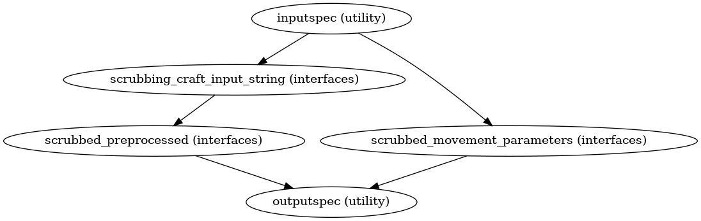

Scrubbing#
- CPAC.scrubbing.create_scrubbing_preproc(wf_name='scrubbing')[source]#
This workflow essentially takes the list of offending timepoints that are to be removed and removes it from the motion corrected input image. Also, it removes the information of discarded time points from the movement parameters file obtained during motion correction.
- Parameters:
wf_name (
string) – Name of the workflow- Returns:
scrub – Scrubbing workfow object
- Return type:
Notes
Workflow Inputs:
inputspec.frames_in_ID : string (mat file) path to file containing list of time points for which FD > threshold inputspec.movement_parameters : string (mat file) path to file containing 1D file containing six movement/motion parameters (3 Translation, 3 Rotations) in different columns inputspec.preprocessed : string (nifti file) preprocessed input image path
Workflow Outputs:
outputspec.preprocessed : string (nifti file) preprocessed scrubbed output image outputspec.scrubbed_movement_parameters : string (mat file) path to 1D file containing six movement/motion parameters for the timepoints which are not discarded by scrubbing
Order of Commands:
Remove all movement parameters for all the time frames other than those that are present in the frames_in_1D file
Remove the discarded timepoints from the input image. For details see 3dcalc:
3dcalc -a bandpassed_demeaned_filtered.nii.gz[0,1,5,6,7,8,9,10,15,16,17,18,19,20,24,25,287,288,289,290,291,292,293,294,295] -expr 'a' -prefix bandpassed_demeaned_filtered_3dc.nii.gz
High Level Workflow Graph:
Detailed Workflow Graph:
Example
>>> from CPAC import scrubbing >>> sc = scrubbing.create_scrubbing_preproc() >>> sc.inputs.inputspec.frames_in_ID = 'frames_in.1D' >>> sc.inputs.inputpsec.movement_parameters = 'rest_mc.1D' >>> sc.inputs.inputpsec.preprocessed = 'rest_pp.nii.gz' >>> sc.run()
{kind=link}
{kind=link}
- CPAC.scrubbing.get_indx(scrub_input, frames_in_1D_file)[source]#
Method to get the list of time frames that are to be included
- Parameters:
in_file (
string) – path to file containing the valid time frames- Returns:
scrub_input_string – input string for 3dCalc in scrubbing workflow, looks something like “ 4dfile.nii.gz[0,1,2,..100] “
- Return type:
string
- CPAC.scrubbing.get_mov_parameters(infile_a, infile_b)[source]#
Method to get the new movement parameters file after removing the offending time frames (i.e., those exceeding FD 0.5mm/0.2mm threshold)
- Parameters:
infile_a (
string) – path to file containing the valid time framesinfile_b (
string) – path to the file containing motion parameters
- Returns:
out_file – path to the file containing motion parameters for the valid time frames
- Return type:
string